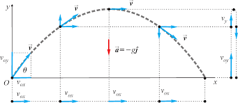

İki boyutta hareket, bir cismin düzlemde (x ve y eksenlerinde) eş zamanlı olarak konum değiştirmesidir. Yatay atış ve eğik atış temel örnekleridir; hava direncinin ihmal edildiği durumlarda yatayda sabit hızlı, düşeyde sabit ivmeli ( yerçekimi ivmesi) hareketin bileşimidir. Konum, hız ve ivme vektörel olarak ifade edilir
